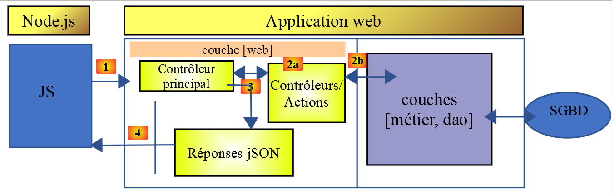

12. Les fonctions HTTP de Javascript

12.1. Choix d’une bibliothèque HTTP
Nous avons fait ici le choix de deux bibliothèques :
EcmaScript 6 a nativement une fonction HTTP appelée [fetch] qui n’est pas implémentée par [node.js] (sept 2019). Il existe une bibliothèque appelée [node-fetch] qui permet d’utiliser la fonction [fetch] sous Node. Cette bibliothèque utilise certaines API propres à [node.js]. Un code [node-fetch] peut être alors non transportable à 100 % dans un environnement non [node], dans un navigateur par exemple ;
Il existe par ailleurs une bibliothèque nommée [axios] dédiée aux requêtes HTTP compatible aussi bien avec [node.js] qu’avec les navigateurs. C’est cette bibliothèque que nous utiliserons au final.
Nous allons présenter un même script écrit avec ces deux bibliothèques pour montrer que la démarche de codage avec elles est analogue.
12.2. Mise en place d’un environnement de travail
12.2.1. Installation du serveur de calcul d’impôt
Ultimement, nous allons écrire une application web avec l’architecture suivante :

JS : Javascript
Le code Javascript est client :
- d’un service de pages ou fragments statiques ;
- d’un service jSON ;
Le code Javascript est donc un client jSON et à ce titre peut être organisé en couches [UI, métier, dao] (UI : User Interface) comme l’ont été nos clients jSON écrits en PHP.
Le serveur sera celui du calcul de l’impôt dont nous avons déjà écrit 13 versions. Nous allons en écrire une 14ième. Nous commençons donc par dupliquer, sous Netbeans, le dossier de la version 13, dans le dossier de la version 14 :

- en [6], nous modifions le fichier [config.json] de la version 14 de la façon suivante :
{
"databaseFilename": "Config/database.json",
"rootDirectory": "C:/myprograms/laragon-lite/www/php7/scripts-web/impots/version-14",
"relativeDependencies": [
"/Entities/BaseEntity.php",
"/Entities/Simulation.php",
...
"vues": {
"vue-authentification.php": [700, 221, 400],
"vue-calcul-impot.php": [200, 300, 341, 350, 800],
"vue-liste-simulations.php": [500, 600]
},
"vue-erreurs": "vue-erreurs.php"
}
- ligne 3, nous changeons le dossier racine de l’application ;
Pour accéder à ce serveur, il faut lancer les services [Laragon].
Ceci fait, nous pouvons tester avec [Postman] (cf. article lien), cette nouvelle version du serveur, identique pour l’instant à la version 13. Nous pouvons utiliser la collection de requêtes utilisées pour tester la version 12 du serveur de calcul d’impôt :

- en [1-4], utiliser la requête [init-session-700] pour initialiser une session jSON ;
- en [4-5], mettre [version-14] au lieu de [version-12] pour tester la version 14 du projet ;
- à l’exécution on doit recevoir la réponse jS0N [6] du serveur ;
La version 14 du serveur est désormais opérationnelle. Nous serons amenés à la modifier légèrement. Rappelons l’API de ce serveur :
Action | Rôle | Contexte d’exécution |
init-session | Sert à fixer le type (json, xml, html) des réponses souhaitées | Requête GET main.php?action=init-session&type=x peut être émise à tout moment |
authentifier-utilisateur | Autorise ou non un utilisateur à se connecter | Requête POST main.php?action=authentifier-utilisateur La requête doit avoir deux paramètres postés [user, password] Ne peut être émise que si le type de la session (json, xml, html) est connu |
calculer-impot | Fait une simulation de calcul d’impôt | Requête POST main.php?action=calculer-impot La requête doit avoir trois paramètres postés [marié, enfants, salaire] Ne peut être émise que si le type de la session (json, xml, html) est connu et l’utilisateur authentifié |
lister-simulations | Demande à voir la liste des simulations opérées depuis le début de la session | Requête GET main.php?action=lister-simulations La requête n’accepte aucun autre paramètre Ne peut être émise que si le type de la session (json, xml, html) est connu et l’utilisateur authentifié |
supprimer-simulation | Supprime une simulation de la liste des simulations | Requête GET main.php?action=lister-simulations&numéro=x La requête n’accepte aucun autre paramètre Ne peut être émise que si le type de la session (json, xml, html) est connu et l’utilisateur authentifié |
fin-session | Termine la session de simulations. | Techniquement l’ancienne session web est supprimée et une nouvelle session est créée Ne peut être émise que si le type de la session (json, xml, html) est connu et l’utilisateur authentifié |
12.2.2. Installation des bibliothèques HTTP du client Javascript
Dans un premier temps, nous travaillerons avec l’architecture suivante :

- en [1], un script console [node.js] fait une requête HTTP vers le serveur jSON du calcul de l’impôt ;
- en [4], il reçoit cette réponse et l’affiche sur la console ;
Dans l’exemple n° 1, nous utiliserons les bibliothèques [node-fetch] et [axios] puis nous ne conserverons qu’[axios] pour les exemples suivants. Nous installons maintenant ces deux bibliothèques Javascript à partir du terminal de [VSCode] :

Nous utiliserons également la bibliothèque [qs] qui permet l’encodage URL d’une chaîne de caractères. On se rappelle que cet encodage est utilisé pour encoder les paramètres d’une requête HTTP GET ou POST.

12.3. script [fetch-01]
Le script [fetch-01] utilise la bibliothèque [node-fetch] pour initialiser une session jSON avec le serveur de calcul d’impôt. Son code est le suivant :
'use strict';
// imports
import fetch from 'node-fetch';
import qs from 'qs';
import { sprintf } from 'sprintf-js';
import moment from 'moment';
// URL de base du serveur de calcul d'impôt
const baseUrl = 'http://localhost/php7/scripts-web/impots/version-14/main.php?';
// init session
async function initSession() {
// options de la requête HHTP [get /main.php?action=init-session&type=json]
const options = {
method: "GET",
timeout: 2000
};
// exécution de la requête HTTP [get /main.php?action=init-session&type=json]
let débutFetch;
try {
// requête asynchrone - [fetch] rend une promesse
débutFetch = moment(Date.now());
const response = await fetch(baseUrl + qs.stringify({
action: 'init-session',
type: 'json'
}), options);
// [response] est l'ensemble de la réponse HTTP du serveur (entêtes HTTP + réponse elle-même)
// on affiche cette réponse pour voir sa structure
console.log(sprintf("réponse fetch formatée en json,=%j, %s", response, heure(débutFetch)));
console.log("réponse fetch en javascript=", response);
// on peut avoir aux entêtes HTTP
console.log("entêtes de la réponse=", response.headers);
// si réponse de type application / json, la réponse json du serveur est obtenue avec la fonction asynchrone [response.json()]
// dans ce cas le code appelant obtient un objet [Promise]
// [await] permet d'obtenir la réponse [json] du serveur plutôt que sa promesse
const débutJson = moment(Date.now());
const objet = await response.json();
console.log(sprintf("réponse json=%j, type=%s, %s", objet, typeof (objet), heure(débutJson)));
return objet;
// si réponse de type text / plain, la réponse texte du serveur est obtenue avec [response.text()]
// dans ce cas le code appelant obtient un objet [Promise]
// [await] permet d'obtenir la réponse [texte] du serveur plutôt que sa promesse
// const text = await response.text();
// console.log("réponse texte=", text);
// return text;
} catch (error) {
// on est là parce que le serveur a envoyé un code d'erreur [404 Not Found, ...] accompagné d'un corps vide - on affiche l'erreur pour voir sa structure
// ou bien parce que le client [fetch] a lancé une exception (réseau inaccesible, ...)
// on affiche la structure de l'erreur
console.log(sprintf("error fetch en json=%j, %s", error, heure(débutFetch)));
console.log("error fetch en javascript=", typeof (error), error);
// on lance le msg d'erreur reçu
throw error.message;
}
}
// la fonction main exécute la fonction asynchrone [initSession]
async function main() {
try {
console.log("requête HTTP vers le serveur en cours ---------------------------------------------");
const response = await initSession();
console.log("succès ---------------------------------------------");
console.log("réponse=", response, typeof (response))
} catch (error) {
console.log("erreur ---------------------------------------------");
console.log("erreur=", error, typeof (error));
}
}
// test
main();
// utilitaire d'affichage heure et durée
function heure(début) {
// heure du moment courant
const now = moment(Date.now());
// formatage heure
let result = "heure=" + now.format("HH:mm:ss:SSS");
// faut-il calculer une durée ?
if (début) {
const durée = now - début;
const milliseconds = durée % 1000;
const seconds = Math.floor(durée / 1000);
// formatage heure + durée
result = result + sprintf(", durée= %s seconde(s) et %s millisecondes", seconds, milliseconds);
}
// résultat
return result;
}
Commentaires
- les fonctions HTTP du Javascript sont des fonctions asynchrones. Nous utilisons ici ce que nous avons appris dans la section précédente (cf. lien) ;
- ligne 24 : pour attendre que la réponse de la fonction asynchrone [fetch] soit publiée sur la boucle événementielle de [node.js], nous utilisons le mot clé [await]. Nous savons qu’alors que cette instruction doit être dans un code préfixé par le mot clé [async] (ligne 13) ;
- lignes 13-56 : nous encapsulons le code HTTP dans la fonction asynchrone [initSession] ;
- lignes 59-69 : une seconde fonction asynchrone [main] est utilisée pour appeler de façon bloquante (async / await) la fonction asynchrone [initSession] ;
- ligne 72 : la fonction asynchrone [main] est appelée ;
- bien que l’ensemble du code ressemble à du code synchrone, ce sont bien des fonctions asynchrones qui sont exécutées, mais de façon bloquante ;
- ligne 19 : pour initialiser une session jSON avec le serveur de calcul d’impôt, il faut lui envoyer la commande HTTP [get /main.php?action=init-session&type=json]. C’est ce que fait le code des lignes 24-27. La syntaxe de [fetch] est la suivante [fetch(URL, options)] avec :
- [URL] : l’URL interrogée ;
- [options] : un objet définissant les options de la requête. C’est là notamment qu’on définit les entêtes HTTP qu’on veut envoyer à la machine cible ;
- lignes 15-18 : on définit les options de la requête qu’on veut faire :
- [method] : on veut faire un GET ;
- [timeout] : on veut que le client [fetch] n’attende pas plus de 2 secondes la réponse du serveur Si ce délai est dépassé, [fetch] lancera une exception ;
- ligne 24 : pour obtenir l’URL [/main.php?action=init-session&type=json], on utilise la bibliohèque [qs] pour obtenir l’encodage URL des paramètres [action,type] du GET. La chaîne obtenue est [init-session&type=json] qu’on aurait pu construire nous-mêmes. On voulait simplement montrer comment obtenir une chaîne URL encodée ;
- ligne 24 : le mot clé [await] montre que c’est une tâche asynchrone qui est lancée ici et qu’on attend qu’elle publie sa réponse sur la boucle événementielle de [node.js] ;
- ligne 24 : dans [response], on obtient un objet complexe qui décrit la totalité de la réponse HTTP reçue (entêtes et document) ;
- lignes 30-31 : on affiche l’objet [response] pour voir sa structure, d’abord comme chaîne de caractères puis comme objet Javascript ;
- ligne 33 : on affiche les entêtes HTTP envoyés par le serveur ;
- ligne 38 : on sait que le serveur de calcul d’impôt va envoyer une chaîne jSON. Celle-ci est encapsulée dans l’objet [response]. On peut l’obtenir avec la méthode [response.json()]. Cependant cette méthode est asynchrone. On écrit donc [await response.json()] pour obtenir la chaîne jSON qui va être publiée sur la boucle événementielle de [node.js]. En fait ce n’est pas la chaîne jSON qu’on obtient mais l’objet Javascript représenté par celle-ci ;
- ligne 39 : affichage de la chaîne jSON reçue ;
- ligne 40 : on rend l’objet Javascript reçu ;
- ligne 47 : on intercepte une erreur éventuelle de l’instruction [fetch]. Celle-ci ne lance une exception que si l’opération HTTP n’a pu aboutir et qu’aucune réponse du serveur n’a été reçue. Si une réponse a été reçue, même avec un code HTTP différent de [200 OK], [fetch] ne lance pas d’exception et la réponse du serveur sera disponible ligne 38 ;
- lignes 51-52 : on affiche l’objet [error] reçu par la clause [catch], d’abord comme une chaîne jSON puis comme un objet Javascript ;
- ligne 54 : le message d’erreur de [fetch] se trouve dans [error.message] ;
- lignes 59-69 : la fonction asynchrone [main] lance la fonction asynchrone [initSession] de façon bloquante (await ligne 62) ;
- ligne 72 : la fonction asynchrone [main] est lancée et le code principal du script est alors terminé. Le script global lui sera terminé lorsque les tâches asynchrones lancées auront publié leurs résultats sur la boucle événementielle ;
Les résultats de l’exécution sont les suivants :
Cas 1 : le serveur Laragon n’est pas lancé
[Running] C:\myprograms\laragon-lite\bin\nodejs\node-v10\node.exe -r esm "c:\Data\st-2019\dev\es6\javascript\http\fetch-01.js"
requête HTTP vers le serveur en cours ---------------------------------------------
error fetch en json={"message":"network timeout at: http://localhost/php7/scripts-web/impots/version-14/main.php?action=init-session&type=json","type":"request-timeout"}, heure=10:08:48:180, durée= 2 seconde(s) et 62 millisecondes
error fetch en javascript= object { FetchError: network timeout at: http://localhost/php7/scripts-web/impots/version-14/main.php?action=init-session&type=json
at Timeout.<anonymous> (c:\Data\st-2019\dev\es6\javascript\node_modules\node-fetch\lib\index.js:1448:13)
at ontimeout (timers.js:436:11)
at tryOnTimeout (timers.js:300:5)
at listOnTimeout (timers.js:263:5)
at Timer.processTimers (timers.js:223:10)
message:
'network timeout at: http://localhost/php7/scripts-web/impots/version-14/main.php?action=init-session&type=json',
type: 'request-timeout' }
erreur ---------------------------------------------
erreur= network timeout at: http://localhost/php7/scripts-web/impots/version-14/main.php?action=init-session&type=json string
[Done] exited with code=0 in 2.804 seconds
Commentaires
- ligne 3 : la requête HTTP échoue au bout de 2 secondes et 62 millisecondes à cause du timeout de 2 secondes qu’on avait imposé à la requête HTTP ;
- lignes 4-9 : l’objet Javascript [error] intercepté par la clause [catch(error)]. Cet objet a deux propriétés :
- [FetchError] : ligne 4 ;
- [message] : lignes 10-12 ;
- ligne 14 : le message d’erreur reçu par la fonction asynchrone [main] ;
Cas 2 : le serveur Laragon est lancé
[Running] C:\myprograms\laragon-lite\bin\nodejs\node-v10\node.exe -r esm "c:\Data\st-2019\dev\es6\javascript\http\fetch-01.js"
requête HTTP vers le serveur en cours ---------------------------------------------
réponse fetch formatée en json,={"size":0,"timeout":2000}, heure=10:13:50:814, durée= 0 seconde(s) et 375 millisecondes
réponse fetch en javascript= Response {
size: 0,
timeout: 2000,
[Symbol(Body internals)]:
{ body:
PassThrough {
_readableState: [ReadableState],
readable: true,
domain: null,
_events: [Object],
_eventsCount: 2,
_maxListeners: undefined,
_writableState: [WritableState],
writable: false,
allowHalfOpen: true,
_transformState: [Object] },
disturbed: false,
error: null },
[Symbol(Response internals)]:
{ url:
'http://localhost/php7/scripts-web/impots/version-14/main.php?action=init-session&type=json',
status: 200,
statusText: 'OK',
headers: Headers { [Symbol(map)]: [Object] },
counter: 0 } }
entêtes de la réponse= Headers {
[Symbol(map)]:
[Object: null prototype] {
date: [ 'Sat, 14 Sep 2019 08:13:50 GMT' ],
server: [ 'Apache/2.4.35 (Win64) OpenSSL/1.1.0i PHP/7.2.11' ],
'x-powered-by': [ 'PHP/7.2.11' ],
'cache-control': [ 'max-age=0, private, must-revalidate, no-cache, private' ],
'set-cookie': [ 'PHPSESSID=99q2iinusmhl55fa600aie2mmu; path=/' ],
'content-length': [ '86' ],
connection: [ 'close' ],
'content-type': [ 'application/json' ] } }
réponse json={"action":"init-session","état":700,"réponse":"session démarrée avec type [json]"}, type=object, heure=10:13:50:825, durée= 0 seconde(s) et 1 millisecondes
succès ---------------------------------------------
réponse= { action: 'init-session',
'état': 700,
'réponse': 'session démarrée avec type [json]' } object
[Done] exited with code=0 in 1.022 seconds
Commentaires
- ligne 3 : [fetch] reçoit la réponse du serveur au bout de 375 ms ;
- lignes 4-39 : la structure de l’objet Javascript [response] encapsulant la réponse du serveur. Parmi ses propriétés, certaines peuvent nous intéresser :
- [status] (ligne 25) : code HTTP de la réponse du serveur ;
- [statusText] (ligne 26) : texte associé à ce code ;
- [headers] (ligne 27) : les entêtes HTTP de la réponse du serveur ;
- [body] (ligne 8) : représente le document envoyé par le serveur. L’instruction [fetch] offre des méthodes pour l’exploiter ;
- lignes 29-39 : les entêtes HTTP de la réponse du serveur ;
- ligne 40 : la fonction asynchrone [response.json()] a publié sa réponse au bout d’1 milliseconde ;
- lignes 42-44 : l’objet Javascript reçu par la fonction asynchrone [main] ;
Cas 3 : le serveur Laragon est lancé mais on lui envoie une commande erronée :

- ci-dessus, ligne 26, on passe un type erroné de session au serveur ;
Les résultats de l’exécution sont les suivants :
requête HTTP vers le serveur en cours ---------------------------------------------
réponse fetch formatée en json,={"size":0,"timeout":2000}, heure=10:27:54:114, durée= 0 seconde(s) et 136 millisecondes
réponse fetch en javascript= Response {
size: 0,
timeout: 2000,
[Symbol(Body internals)]:
{ body:
PassThrough {
_readableState: [ReadableState],
readable: true,
domain: null,
_events: [Object],
_eventsCount: 2,
_maxListeners: undefined,
_writableState: [WritableState],
writable: false,
allowHalfOpen: true,
_transformState: [Object] },
disturbed: false,
error: null },
[Symbol(Response internals)]:
{ url:
'http://localhost/php7/scripts-web/impots/version-14/main.php?action=init-session&type=x',
status: 400,
statusText: 'Bad Request',
headers: Headers { [Symbol(map)]: [Object] },
counter: 0 } }
entêtes de la réponse= Headers {
[Symbol(map)]:
[Object: null prototype] {
date: [ 'Sat, 14 Sep 2019 08:27:54 GMT' ],
server: [ 'Apache/2.4.35 (Win64) OpenSSL/1.1.0i PHP/7.2.11' ],
'x-powered-by': [ 'PHP/7.2.11' ],
'cache-control': [ 'max-age=0, private, must-revalidate, no-cache, private' ],
'set-cookie': [ 'PHPSESSID=5ku9gfok81ikj98hia0meeum57; path=/' ],
'content-length': [ '79' ],
connection: [ 'close' ],
'content-type': [ 'application/json' ] } }
réponse json={"action":"init-session","état":703,"réponse":"paramètre type=[x] invalide"}, type=object, heure=10:27:54:127, durée= 0 seconde(s) et 2 millisecondes
succès ---------------------------------------------
réponse= { action: 'init-session',
'état': 703,
'réponse': 'paramètre type=[x] invalide' } object
[Done] exited with code=0 in 0.712 seconds
- la réponse du serveur est reçue ligne 2 ;
- ligne 24 : on peut voir que le code HTTP de la réponse du serveur est 400, un code d’erreur. Néanmoins, [fetch] n’a pas lancé d’exception. Tant que [fetch] reçoit une réponse du serveur, il l’exploite et ne lance pas d’exception ;
- lignes 41-43 : la réponse obtenue par la fonction asynchrone [main] ;
12.4. script [fetch-02]
Le script suivant reprend le script [fetch-01] en le débarrassant de tous les détails inutiles :
'use strict';
// imports
import fetch from 'node-fetch';
import qs from 'qs';
// URL de base du serveur de calcul d'impôt
const baseUrl = 'http://localhost/php7/scripts-web/impots/version-14/main.php?';
// init session
async function initSession() {
// options de la requête HHTP [get /main.php?action=init-session&type=json]
const options = {
method: "GET",
timeout: 2000
};
// exécution de la requête HTTP [get /main.php?action=init-session&type=json]
const response = await fetch(baseUrl + qs.stringify({
action: 'init-session',
type: 'json'
}), options);
// résultat reçu en jSON
return await response.json();
}
// la fonction main exécute la fonction asynchrone [initSession]
async function main() {
try {
console.log("requête HTTP vers le serveur en cours ---------------------------------------------");
const response = await initSession();
console.log("succès ---------------------------------------------");
console.log("réponse=", response)
} catch (error) {
console.log("erreur ---------------------------------------------");
console.log("erreur=", error.message);
}
}
// test
main();
Les résultats d’une exécution normale :
[Running] C:\myprograms\laragon-lite\bin\nodejs\node-v10\node.exe -r esm "c:\Data\st-2019\dev\es6\javascript\http\fetch-02.js"
requête HTTP vers le serveur en cours ---------------------------------------------
succès ---------------------------------------------
réponse= { action: 'init-session',
'état': 700,
'réponse': 'session démarrée avec type [json]' }
[Done] exited with code=0 in 0.56 seconds
Les résultats d’une exécution avec exception (on arrête le serveur Laragon) :
[Running] C:\myprograms\laragon-lite\bin\nodejs\node-v10\node.exe -r esm "c:\Data\st-2019\dev\es6\javascript\http\fetch-02.js"
requête HTTP vers le serveur en cours ---------------------------------------------
erreur ---------------------------------------------
erreur= network timeout at: http://localhost/php7/scripts-web/impots/version-14/main.php?action=init-session&type=json
[Done] exited with code=0 in 2.701 seconds
12.5. script [axios-01]
On reprend ici le script [fetch-01] que l’on réécrit avec la bibliothèque [axios]. On rappelle que notre intérêt pour cette bibliothèque est qu’elle soit portable entre l’environnement [node.js] et ceux des navigateurs usuels. Cela permet :
- dans une phase 1, de tester nos scripts dans un environnement [node.js] ;
- dans une phase 2, de les porter sur un navigateur ;
Le script [axios-01] reprend la structure du script [fetch-01] :
'use strict';
import axios from 'axios';
// configuration par défaut d'axios
axios.defaults.timeout = 2000;
axios.defaults.baseURL = 'http://localhost/php7/scripts-web/impots/version-14';
// init session
async function initSession(axios) {
// options de la requête HHTP [get /main.php?action=init-session&type=json]
const options = {
method: "GET",
// paramètres de l'URL
params: {
action: 'init-session',
type: 'json'
}
};
// exécution de la requête HTTP [get /main.php?action=init-session&type=json]
try {
// requête asynchrone
const response = await axios.request('main.php', options);
// response est l'ensemble de la réponse HTTP du serveur (entêtes HTTP + réponse elle-même)
// on affiche cette réponse pour voir sa structure
console.log("réponse axios=", response);
// la réponse du serveur est dans [response.data]
return response.data;
} catch (error) {
// on est là parce que le serveur a envoyé un code d'erreur [404 Not Found, 500 Internal Server Error, ...]
// le paramètre [error] est une instance d'exception - elle peut avoir diverses formes
// on l'affiche pour voir sa structure
console.log("axios error=", typeof (error), error);
if (error.response) {
// le serveur a signalé une erreur dans le statut HTTP mais il a aussi envoyé une réponse
// alors celle-ci est trouvée dans [error.response.data]
// on sait que le serveur envoie des réponses jSON de structure {action, état, réponse}
// et qu'en cas d'erreur, le msg d'erreur est dans [réponse]
return error.response.data;
} else {
// on lance l'erreur
throw error;
}
}
}
// la fonction main exécute la fonction asynchrone [initSession]
async function main() {
try {
console.log("requête HTTP vers le serveur en cours ---------------------------------------------");
const response = await initSession(axios);
console.log("succès ---------------------------------------------");
console.log("réponse=", response, typeof (response))
} catch (error) {
console.log("erreur ---------------------------------------------");
console.log("erreur=", error.message);
}
}
// test
main();
Commentaires
- ligne 2 : on importe la bibliothèque [axios] ;
- lignes 5-6 : configuration par défaut des requêtes HTTP. Les options [axios.defaults] sont valables pour toutes les requêtes HTTP émises par l’objet [axios] sans qu’on ait besoin de les rappeler à chaque nouvelle requête ;
- ligne 5 : timeout de 2 secondes pour toutes les requêtes ;
- ligne 6 : toutes les URL seront exprimées relativement à l’URL de base ;
- ligne 9 : la fonction asynchrone [initSession] ;
- lignes 11-18 : les options de la requête HTTP qui va être émise (en plus des options par défaut déjà définies aux lignes 5-6) ;
- lignes 14-17 : les paramètres de l’URL [action=init-session&type=json]. L’objet [params] sera automatiquement transformée en chaîne de caractères URL encodée ;
- ligne 22 : appel bloquant de la fonction asynchrone [axios.request]. Le 1er paramètre est l’URL cible construite comme [main.php] ajouté à l’URL de base définie ligne 6. Le second paramètre est l’objet [options] des lignes 11-18 ;
- ligne 25 : [response] est un objet Javascript encapsulant la totalité de la réponse HTTP du serveur (entêtes HTTP + document réponse). On l’affiche pour voir sa structure Javascript ;
- ligne 27 : si le serveur a envoyé un document, alors il est trouvé dans [response.data]. Ici nous savons que le serveur envoie une réponse jSON accompagnée de l’entête HTTP [Content-type : application/json]. La présence de cet entête fait que [axios] désérialise automatiquement [response.data] en un objet Javascript ;
- ligne 28 : la fonction [axios] peut lancer une exception. C’est là que [axios] diffère de [fetch]. Une exception est lancée dans les cas suivants :
- la requête HTTP n’a pas pu être émise (erreur côté client) ;
- le serveur a envoyé un code HTTP d’erreur (400, 404, 500, …) (ce point est en fait configurable). On rappelle que si ce code HTTP est accompagné d’une réponse, [fetch] ne lançait pas d’exception alors qu’[axios] en lance une. Néanmoins, si le code HTTP d’erreur est accompagné d’un document, celui-ci est mis dans [error.response] ;
- ligne 32 : on affiche la structure Javascript de l’objet [error] ;
- lignes 33-38 : si l’objet [error] contient un objet [response] alors c’est cette réponse qu’on rend au code appelant ;
- lignes 39-42 : dans les autres cas, on remonte l’objet [error] au code appelant ;
- lignes 47-57 : la fonction asynchrone [main] ;
- ligne 50 : appel bloquant à la fonction asynchrone [initSession]. On récupère la réponse jSON du serveur comme un objet Javascript ;
- lignes 53-56 : interception de l’erreur éventuelle. Le message d’erreur est dans [error.message] ;
Les résultats de l’exécution sont les suivants :
Cas 1 : le serveur Laragon n’est pas lancé
[Running] C:\myprograms\laragon-lite\bin\nodejs\node-v10\node.exe -r esm "c:\Data\st-2019\dev\es6\javascript\http\axios-01.js"
requête HTTP vers le serveur en cours ---------------------------------------------
axios error= object { Error: timeout of 2000ms exceeded
at createError (c:\Data\st-2019\dev\es6\javascript\node_modules\axios\lib\core\createError.js:16:15)
at Timeout.handleRequestTimeout (c:\Data\st-2019\dev\es6\javascript\node_modules\axios\lib\adapters\http.js:252:16)
at ontimeout (timers.js:436:11)
at tryOnTimeout (timers.js:300:5)
at listOnTimeout (timers.js:263:5)
at Timer.processTimers (timers.js:223:10)
config:
{ url:
'http://localhost/php7/scripts-web/impots/version-14/main.php',
method: 'get',
params: { action: 'init-session', type: 'json' },
headers:
{ Accept: 'application/json, text/plain, */*',
'User-Agent': 'axios/0.19.0' },
baseURL: 'http://localhost/php7/scripts-web/impots/version-14',
transformRequest: [ [Function: transformRequest] ],
transformResponse: [ [Function: transformResponse] ],
timeout: 2000,
adapter: [Function: httpAdapter],
xsrfCookieName: 'XSRF-TOKEN',
xsrfHeaderName: 'X-XSRF-TOKEN',
maxContentLength: -1,
validateStatus: [Function: validateStatus],
data: undefined },
code: 'ECONNABORTED',
request:
Writable {
_writableState:
WritableState {
objectMode: false,
highWaterMark: 16384,
finalCalled: false,
needDrain: false,
ending: false,
ended: false,
finished: false,
destroyed: false,
decodeStrings: true,
defaultEncoding: 'utf8',
length: 0,
writing: false,
corked: 0,
sync: true,
bufferProcessing: false,
onwrite: [Function: bound onwrite],
writecb: null,
writelen: 0,
bufferedRequest: null,
lastBufferedRequest: null,
pendingcb: 0,
prefinished: false,
errorEmitted: false,
emitClose: true,
bufferedRequestCount: 0,
corkedRequestsFree: [Object] },
writable: true,
domain: null,
_events:
[Object: null prototype] {
response: [Function: handleResponse],
error: [Function: handleRequestError] },
_eventsCount: 2,
_maxListeners: undefined,
_options:
{ protocol: 'http:',
maxRedirects: 21,
maxBodyLength: 10485760,
path:
'/php7/scripts-web/impots/version-14/main.php?action=init-session&type=json',
method: 'GET',
headers: [Object],
agent: undefined,
auth: undefined,
hostname: 'localhost',
port: null,
nativeProtocols: [Object],
pathname: '/php7/scripts-web/impots/version-14/main.php',
search: '?action=init-session&type=json' },
_redirectCount: 0,
_redirects: [],
_requestBodyLength: 0,
_requestBodyBuffers: [],
_onNativeResponse: [Function],
_currentRequest:
ClientRequest {
domain: null,
_events: [Object],
_eventsCount: 6,
_maxListeners: undefined,
output: [],
outputEncodings: [],
outputCallbacks: [],
outputSize: 0,
writable: true,
_last: true,
chunkedEncoding: false,
shouldKeepAlive: false,
useChunkedEncodingByDefault: false,
sendDate: false,
_removedConnection: false,
_removedContLen: false,
_removedTE: false,
_contentLength: 0,
_hasBody: true,
_trailer: '',
finished: true,
_headerSent: true,
socket: [Socket],
connection: [Socket],
_header:
'GET /php7/scripts-web/impots/version-14/main.php?action=init-session&type=json HTTP/1.1\r\nAccept: application/json, text/plain, */*\r\nUser-Agent: axios/0.19.0\r\nHost: localhost\r\nConnection: close\r\n\r\n',
_onPendingData: [Function: noopPendingOutput],
agent: [Agent],
socketPath: undefined,
timeout: undefined,
method: 'GET',
path:
'/php7/scripts-web/impots/version-14/main.php?action=init-session&type=json',
_ended: false,
res: null,
aborted: 1568528450762,
timeoutCb: null,
upgradeOrConnect: false,
parser: [HTTPParser],
maxHeadersCount: null,
_redirectable: [Circular],
[Symbol(isCorked)]: false,
[Symbol(outHeadersKey)]: [Object] },
_currentUrl:
'http://localhost/php7/scripts-web/impots/version-14/main.php?action=init-session&type=json' },
response: undefined,
isAxiosError: true,
toJSON: [Function] }
erreur ---------------------------------------------
erreur= timeout of 2000ms exceeded
[Done] exited with code=0 in 2.784 seconds
Commentaires
- lignes 33-136 : l’objet [error] contient de nombreuses informations ;
- [Error], lignes 3-9 : une description de l’erreur qui s’est produite ;
- [config], lignes 10-27 : la configuration de la requête HTTP qui a mené à cette erreur ;
- [config.url], lignes 11-12 : l’URL cible ;
- [config.method], ligne 13 : méthode de la requête ;
- [config.params], ligne 14 : les paramètres de l’URL ;
- [config.headers], lignes 16-17 : les entêtes HTTP de la requête ;
- [config.baseURL], ligne 18 : l’URL de base de l’URL cible ;
- [config.timeout], ligne 21 : le timeout de la requête ;
- [code], ligne 28 : un code d’erreur ;
- [request], lignes 29-133 : une description détaillée de la requête HTTP. On remarquera que la plupart des propriétés sont préfixées par l’underscore _ montrant par là que ce sont des propriétés internes à l’objet [request] pas destinées à être exploitées directement par le développeur ;
- [response], ligne 134 : la réponse du serveur, ici inexistante ;
- ligne 138 : le message d’erreur affiché par la fonction [main] ;
Cas 2 : le serveur Laragon est lancé
[Running] C:\myprograms\laragon-lite\bin\nodejs\node-v10\node.exe -r esm "c:\Data\st-2019\dev\es6\javascript\http\axios-01.js"
requête HTTP vers le serveur en cours ---------------------------------------------
réponse axios= { status: 200,
statusText: 'OK',
headers:
{ date: 'Sun, 15 Sep 2019 07:09:26 GMT',
server: 'Apache/2.4.35 (Win64) OpenSSL/1.1.0i PHP/7.2.11',
'x-powered-by': 'PHP/7.2.11',
'cache-control': 'max-age=0, private, must-revalidate, no-cache, private',
'set-cookie': [ 'PHPSESSID=uas6lugtblstktcifpd8e5irm6; path=/' ],
'content-length': '86',
connection: 'close',
'content-type': 'application/json' },
config:
{ url:
'http://localhost/php7/scripts-web/impots/version-14/main.php',
method: 'get',
params: { action: 'init-session', type: 'json' },
headers:
{ Accept: 'application/json, text/plain, */*',
'User-Agent': 'axios/0.19.0' },
baseURL: 'http://localhost/php7/scripts-web/impots/version-14',
transformRequest: [ [Function: transformRequest] ],
transformResponse: [ [Function: transformResponse] ],
timeout: 2000,
adapter: [Function: httpAdapter],
xsrfCookieName: 'XSRF-TOKEN',
xsrfHeaderName: 'X-XSRF-TOKEN',
maxContentLength: -1,
validateStatus: [Function: validateStatus],
data: undefined },
request:
ClientRequest {
domain: null,
_events:
[Object: null prototype] {
socket: [Function],
abort: [Function],
aborted: [Function],
error: [Function],
timeout: [Function],
prefinish: [Function: requestOnPrefinish] },
_eventsCount: 6,
_maxListeners: undefined,
output: [],
outputEncodings: [],
outputCallbacks: [],
outputSize: 0,
writable: true,
_last: true,
chunkedEncoding: false,
shouldKeepAlive: false,
useChunkedEncodingByDefault: false,
sendDate: false,
_removedConnection: false,
_removedContLen: false,
_removedTE: false,
_contentLength: 0,
_hasBody: true,
_trailer: '',
finished: true,
_headerSent: true,
socket:
Socket {
connecting: false,
_hadError: false,
_handle: [TCP],
_parent: null,
_host: 'localhost',
_readableState: [ReadableState],
readable: true,
domain: null,
_events: [Object],
_eventsCount: 7,
_maxListeners: undefined,
_writableState: [WritableState],
writable: false,
allowHalfOpen: false,
_sockname: null,
_pendingData: null,
_pendingEncoding: '',
server: null,
_server: null,
parser: null,
_httpMessage: [Circular],
[Symbol(asyncId)]: 6,
[Symbol(lastWriteQueueSize)]: 0,
[Symbol(timeout)]: null,
[Symbol(kBytesRead)]: 0,
[Symbol(kBytesWritten)]: 0 },
connection:
Socket {
connecting: false,
_hadError: false,
_handle: [TCP],
_parent: null,
_host: 'localhost',
_readableState: [ReadableState],
readable: true,
domain: null,
_events: [Object],
_eventsCount: 7,
_maxListeners: undefined,
_writableState: [WritableState],
writable: false,
allowHalfOpen: false,
_sockname: null,
_pendingData: null,
_pendingEncoding: '',
server: null,
_server: null,
parser: null,
_httpMessage: [Circular],
[Symbol(asyncId)]: 6,
[Symbol(lastWriteQueueSize)]: 0,
[Symbol(timeout)]: null,
[Symbol(kBytesRead)]: 0,
[Symbol(kBytesWritten)]: 0 },
_header:
'GET /php7/scripts-web/impots/version-14/main.php?action=init-session&type=json HTTP/1.1\r\nAccept: application/json, text/plain, */*\r\nUser-Agent: axios/0.19.0\r\nHost: localhost\r\nConnection: close\r\n\r\n',
_onPendingData: [Function: noopPendingOutput],
agent:
Agent {
domain: null,
_events: [Object],
_eventsCount: 1,
_maxListeners: undefined,
defaultPort: 80,
protocol: 'http:',
options: [Object],
requests: {},
sockets: [Object],
freeSockets: {},
keepAliveMsecs: 1000,
keepAlive: false,
maxSockets: Infinity,
maxFreeSockets: 256 },
socketPath: undefined,
timeout: undefined,
method: 'GET',
path:
'/php7/scripts-web/impots/version-14/main.php?action=init-session&type=json',
_ended: true,
res:
IncomingMessage {
_readableState: [ReadableState],
readable: false,
domain: null,
_events: [Object],
_eventsCount: 3,
_maxListeners: undefined,
socket: [Socket],
connection: [Socket],
httpVersionMajor: 1,
httpVersionMinor: 0,
httpVersion: '1.0',
complete: true,
headers: [Object],
rawHeaders: [Array],
trailers: {},
rawTrailers: [],
aborted: false,
upgrade: false,
url: '',
method: null,
statusCode: 200,
statusMessage: 'OK',
client: [Socket],
_consuming: false,
_dumped: false,
req: [Circular],
responseUrl:
'http://localhost/php7/scripts-web/impots/version-14/main.php?action=init-session&type=json',
redirects: [] },
aborted: undefined,
timeoutCb: null,
upgradeOrConnect: false,
parser: null,
maxHeadersCount: null,
_redirectable:
Writable {
_writableState: [WritableState],
writable: true,
domain: null,
_events: [Object],
_eventsCount: 2,
_maxListeners: undefined,
_options: [Object],
_redirectCount: 0,
_redirects: [],
_requestBodyLength: 0,
_requestBodyBuffers: [],
_onNativeResponse: [Function],
_currentRequest: [Circular],
_currentUrl:
'http://localhost/php7/scripts-web/impots/version-14/main.php?action=init-session&type=json' },
[Symbol(isCorked)]: false,
[Symbol(outHeadersKey)]:
[Object: null prototype] { accept: [Array], 'user-agent': [Array], host: [Array] } },
data:
{ action: 'init-session',
'état': 700,
'réponse': 'session démarrée avec type [json]' } }
succès ---------------------------------------------
réponse= { action: 'init-session',
'état': 700,
'réponse': 'session démarrée avec type [json]' } object
[Done] exited with code=0 in 1.115 seconds
Commentaires
- lignes 3-203 : l’objet Javascript [response] qui encapsule la réponse HTTP du serveur ;
- ligne 3, [status] : le code HTTP de la réponse ;
- ligne 4, [statusText] : le texte associé au code HTTP précédent ;
- lignes 5-13, [headers] : les entêtes HTTP de la réponse :
- ligne 10, [Set-Cookie] : le cookie de session ;
- ligne 13, [Content-Type] : le type du document envoyé par le serveur ;
- lignes 14-31, [config] : la configuration de la requête HTTP émise ;
- lignes 32-199, [request] : l’objet Javascript détaillant la requête HTTP émise ;
- lignes 200-203, [request.data] : l’objet Javascript encapsulant la réponse jSON du serveur ;
- lignes 205-207 : la réponse récupérée par la fonction asynchrone [main] ;
Cas 3 : on fait une requête [init-session] erronée au serveur Laragon ;

Les résultats de l’exécution sont les suivants :
[Running] C:\myprograms\laragon-lite\bin\nodejs\node-v10\node.exe -r esm "c:\Data\st-2019\dev\es6\javascript\http\axios-01.js"
requête HTTP vers le serveur en cours ---------------------------------------------
axios error= object { Error: Request failed with status code 400
...
config:
{ url:
'http://localhost/php7/scripts-web/impots/version-14/main.php',
...
data: undefined },
request:
...
[Symbol(outHeadersKey)]:
[Object: null prototype] { accept: [Array], 'user-agent': [Array], host: [Array] } },
response:
{ status: 400,
statusText: 'Bad Request',
headers:
{ date: 'Sun, 15 Sep 2019 07:25:58 GMT',
server: 'Apache/2.4.35 (Win64) OpenSSL/1.1.0i PHP/7.2.11',
'x-powered-by': 'PHP/7.2.11',
'cache-control': 'max-age=0, private, must-revalidate, no-cache, private',
'set-cookie': [Array],
'content-length': '79',
connection: 'close',
'content-type': 'application/json' },
config:
{ url:
'http://localhost/php7/scripts-web/impots/version-14/main.php',
...
data: undefined },
request:
...
[Symbol(outHeadersKey)]: [Object] },
data:
{ action: 'init-session',
'état': 703,
'réponse': 'paramètre type=[x] invalide' } },
isAxiosError: true,
toJSON: [Function] }
succès ---------------------------------------------
réponse= { action: 'init-session',
'état': 703,
'réponse': 'paramètre type=[x] invalide' } object
[Done] exited with code=0 in 0.69 seconds
Parce que le serveur a répondu avec un code HTTP 400 (ligne 15), [axios] a lancé une exception (encore une fois ce comportement est configurable). Bien que [axios] ait lancé une exception, on obtient bien la réponse HTTP du serveur dans [error.response] (ligne 14) et le document jSON envoyé [error.response.data] (ligne 34). Lignes 41-43 : la fonction [main] récupère correctement la réponse jSON du serveur.
12.6. script [axios-02]
Maintenant que nous avons détaillé les objets manipulés par la bibliothèque [axios] lors d’une requête HTTP, on peut réécrire le script [axios-01] de la façon suivante :
'use strict';
import axios from 'axios';
// configuration par défaut d'axios
axios.defaults.timeout = 2000;
axios.defaults.baseURL = 'http://localhost/php7/scripts-web/impots/version-14';
// init session
async function initSession(axios) {
// options de la requête HHTP [get /main.php?action=init-session&type=json]
const options = {
method: "GET",
// paramètres de l'URL
params: {
action: 'init-session',
type: 'json'
}
};
try {
// exécution de la requête HTTP [get /main.php?action=init-session&type=json]
const response = await axios.request('main.php', options);
// la réponse du serveur est dans [response.data]
return response.data;
} catch (error) {
// réponse du serveur
if (error.response) {
// la réponse jSON est dans [error.response.data]
return error.response.data;
} else {
// on relance l'erreur
throw error;
}
}
}
// la fonction main exécute la fonction asynchrone [initSession]
async function main() {
try {
console.log("requête HTTP vers le serveur en cours ---------------------------------------------");
const response = await initSession(axios);
console.log("succès ---------------------------------------------");
console.log("réponse=", response, typeof (response))
} catch (error) {
console.log("erreur ---------------------------------------------");
console.log("erreur=", error.message);
}
}
// test
main();
12.7. script [axios-03]
Le script [axios-03] reprend la méthodogie du script [axios-02]. On ajoute cette fois la requête HTTP [authentifier-utilisateur] vers le serveur qui se fait à l’aide d’un POST :
'use strict';
import axios from 'axios';
import qs from 'qs'
// configuration axios
axios.defaults.timeout = 2000;
axios.defaults.baseURL = 'http://localhost/php7/scripts-web/impots/version-14';
// init session
async function initSession(axios) {
// options de la requête HHTP [get /main.php?action=init-session&type=json]
const options = {
method: "GET",
// paramètres de l'URL
params: {
action: 'init-session',
type: 'json'
}
};
try {
// exécution de la requête HTTP [get /main.php?action=init-session&type=json]
const response = await axios.request('main.php', options);
// la réponse du serveur est dans [response.data]
return response.data;
} catch (error) {
// réponse du serveur
if (error.response) {
// la réponse jSON est dans [error.response.data]
return error.response.data;
} else {
// on relance l'erreur
throw error;
}
}
}
async function authentifierUtilisateur(axios, user, password) {
// options de la requête HHTP [POST /main.php?action=authentifier-utilisateur]
const options = {
method: "POST",
headers: {
'Content-type': 'application/x-www-form-urlencoded',
},
// corps du POST
data: qs.stringify({
user: user,
password: password
}),
// paramètres de l'URL
params: {
action: 'authentifier-utilisateur'
}
};
try {
// exécution de la requête HTTP [post /main.php?action=authentifier-utilisateur]
const response = await axios.request('main.php', options);
// la réponse du serveur est dans [response.data]
return response.data;
} catch (error) {
// réponse du serveur
if (error.response) {
// la réponse jSON est dans [error.response.data]
return error.response.data;
} else {
// on relance l'erreur
throw error;
}
}
}
// la fonction main exécute les fonctions asynchrones une par une
async function main() {
try {
// init-session
console.log("action init-session en cours ---------------------------------------------");
const response1 = await initSession(axios);
console.log("succès ---------------------------------------------");
console.log("réponse=", response1);
// authentifier-utilisateur
console.log("action authentifier-utilisateur en cours ---------------------------------------------");
const response2 = await authentifierUtilisateur(axios, 'admin', 'admin');
console.log("succès ---------------------------------------------");
console.log("réponse=", response2)
} catch (error) {
console.log("erreur ---------------------------------------------");
console.log("erreur=", error);
}
}
// test
main();
Commentaires
- lignes 38-70 : la fonction asynchrone [authentifierUtilisateur] ;
- ligne 39 : il faut faire la requête [POST /main.php?action=authentifier-utilisateur] ;
- lignes 40-54 : les options de la requête HTTP ;
- ligne 41 : c’est un POST ;
- lignes 42-44 : les paramètres du POST seront URL encodés dans un document que le client envoie avec sa requête ;
- lignes 46-49 : la propriété [data] doit contenir la chaîne du POST URL encodée. Pour cela, on utilise ici la bibliothèque [qs] importée ligne 3 ;
- lignes 55-69 : pour l’exécution de la requête, on retrouve le même code que dans la méthode [initSession] ;
- lignes 73-89 : la méthode [asynchrone] appelle successivement, de manière bloquante, les méthodes [initSession, authentifierUtilisateur], lignes 77 et 82 ;
- ligne 82 : on utilise le couple (admin, admin) comme identifiants de connexion. On sait qu’ils sont reconnus par le serveur ;
Les résultats de l’exécution sont les suivants :
[Running] C:\myprograms\laragon-lite\bin\nodejs\node-v10\node.exe -r esm "c:\Data\st-2019\dev\es6\javascript\http\axios-03.js"
action init-session en cours ---------------------------------------------
succès ---------------------------------------------
réponse= { action: 'init-session',
'état': 700,
'réponse': 'session démarrée avec type [json]' }
action authentifier-utilisateur en cours ---------------------------------------------
succès ---------------------------------------------
réponse= { action: 'authentifier-utilisateur',
'état': 103,
'réponse':
[ 'pas de session en cours. Commencer par action [init-session]' ] }
[Done] exited with code=0 in 0.834 seconds
- lignes 9-12 : l’authentification utilisateur échoue : le serveur n’a pas retenu le fait qu’on avait initié une session jSON. Cela vient du fait qu’on n’a pas renvoyé le cookie de session envoyé en réponse à la 1ère requête [init-session] ;
12.8. script [axios-04]
Le script [axios-04] amène deux améliorations au script [axios-03] :
- il gère le cookie de session ;
- il factorise dans une fonction [getRemoteData] ce qui est commun aux fonctions [initSession] et [authentifierUtilisateur] ;
'use strict';
import axios from 'axios';
import qs from 'qs'
// configuration axios
axios.defaults.timeout = 2000;
axios.defaults.baseURL = 'http://localhost/php7/scripts-web/impots/version-14';
// cookie de session
const sessionCookieName = "PHPSESSID";
let sessionCookie = '';
// init session
async function initSession(axios) {
// options de la requête HHTP [get /main.php?action=init-session&type=json]
const options = {
method: "GET",
// paramètres de l'URL
params: {
action: 'init-session',
type: 'json'
}
};
// exécution de la requête HTTP
return await getRemoteData(axios, options);
}
async function authentifierUtilisateur(axios, user, password) {
// options de la requête HHTP [post /main.php?action=authentifier-utilisateur]
const options = {
method: "POST",
headers: {
'Content-type': 'application/x-www-form-urlencoded',
},
// corps du POST
data: qs.stringify({
user: user,
password: password
}),
// paramètres de l'URL
params: {
action: 'authentifier-utilisateur'
}
};
// exécution de la requête HTTP
return await getRemoteData(axios, options);
}
async function getRemoteData(axios, options) {
// pour le cookie de session
if (!options.headers) {
options.headers = {};
}
options.headers.Cookie = sessionCookie;
// exécution de la requête HTTP
let response;
try {
// requête asynchrone
response = await axios.request('main.php', options);
} catch (error) {
// le paramètre [error] est une instance d'exception - elle peut avoir diverses formes
if (error.response) {
// la réponse du serveur est dans [error.response]
response = error.response;
} else {
// on relance l'erreur
throw error;
}
}
// response est l'ensemble de la réponse HTTP du serveur (entêtes HTTP + réponse elle-même)
// on récupère le cookie de session s'il existe
const setCookie = response.headers['set-cookie'];
if (setCookie) {
// setCookie est un tableau
// on cherche le cookie de session dans ce tableau
let trouvé = false;
let i = 0;
while (!trouvé && i < setCookie.length) {
// on cherche le cookie de session
const results = RegExp('^(' + sessionCookieName + '.+?);').exec(setCookie[i]);
if (results) {
// on mémorise le cookie de session
// eslint-disable-next-line require-atomic-updates
sessionCookie = results[1];
// on a trouvé
trouvé = true;
} else {
// élément suivant
i++;
}
}
}
// la réponse du serveur est dans [response.data]
return response.data;
}
// la fonction main exécute les fonctions asynchrones une par une
async function main() {
try {
// init-session
console.log("action init-session en cours ---------------------------------------------");
const response1 = await initSession(axios);
console.log("succès ---------------------------------------------");
console.log("réponse=", response1);
// authentifier-utilisateur
console.log("action authentifier-utilisateur en cours ---------------------------------------------");
const response2 = await authentifierUtilisateur(axios, 'admin', 'admin');
console.log("succès ---------------------------------------------");
console.log("réponse=", response2)
} catch (error) {
console.log("erreur ---------------------------------------------");
console.log("erreur=", error.message);
}
}
// test
main();
Commentaires
- lignes 14-26 : la fonction [initSession]. Elle se contente désormais de préparer la requête HTTP à envoyer au serveur mais ne l’exécute pas. Elle confie ce rôle à la méthode [getRemoteDate] des lignes 49-95 ;
- lignes 28-47 : la fonction [authentifierUtilisateur] suit la même démarche ;
- ligne 49 : la fonction [getRemoteData] reçoit les deux informations qui lui permettent d’exécuter une requête HTTP:
- [axios], l’objet qui va se charger d’envoyer la requête et de recevoir la réponse ;
- [options], les options de configuration de la requête à envoyer au serveur ;
- ligne 59 : exécution de la requête et attente bloquante de sa réponse jSON ;
- lignes 60-68 : gestion de l’éventuelle exception ;
- ligne 64 : on récupère la réponse qui peut être encapsulée dans l’objet d’erreur ;
- ligne 67 : si le serveur a lancé une exception sans y inclure la réponse du serveur, alors on remonte l’erreur reçue au code appelant ;
- la fonction [getRemoteData] gère le cookie de session :
- il le mémorise dans la variable [sessionCookie] (ligne 11) lorsqu’il le reçoit la 1ère fois ;
- il le renvoie ensuite à chaque nouvelle requête HTTP ;
- ligne 72-92 : [getRemoteData] analyse chaque réponse du serveur pour savoir s’il a envoyé l’entête HTTP [Set-Cookie]. On sait que le serveur envoie un cookie de session nommé [PHPSESSID] (ligne 10). C’est donc ce cookie que l’on recherche (ligne 10) ;
- ligne 72 : on récupère les entêtes HTTP [Set-Cookie] s’ils existent (la casse n’a pas d’importance). Il peut y avoir en effet plusieurs entêtes [Set-Cookie] et c’est donc un tableau que l’on récupère ;
- ligne 73 : si on a récupéré un tableau de cookies ;
- lignes 78-90 : on cherche le cookie de session parmi tous les cookies du tableau ;
- ligne 80 : l’expression relationnelle qui permet de chercher le cookie de session dans le cookie n° i ;
- ligne 81 : si la comparaison a ramené des résultats ;
- ligne 84 : on a dans results[1], la 1ère parenthèse du modèle de l’expression relationnelle, ç-à-d (PHPSESSID=xxxx) jusqu’au ; (non inclus) qui termine le cookie de session ;
- lignes 50-54 : à chaque requête, le cookie de session est inclus dans les entêtes HTTP de la requête. La 1ère fois, ce cookie est vide et sera alors ignoré par le serveur ;
Les résultats de l’exécution sont les suivants :
[Running] C:\myprograms\laragon-lite\bin\nodejs\node-v10\node.exe -r esm "c:\Data\st-2019\dev\es6\javascript\http\axios-04.js"
action init-session en cours ---------------------------------------------
succès ---------------------------------------------
réponse= { action: 'init-session',
'état': 700,
'réponse': 'session démarrée avec type [json]' }
action authentifier-utilisateur en cours ---------------------------------------------
succès ---------------------------------------------
réponse= { action: 'authentifier-utilisateur',
'état': 200,
'réponse': 'Authentification réussie [admin, admin]' }
[Done] exited with code=0 in 0.982 seconds